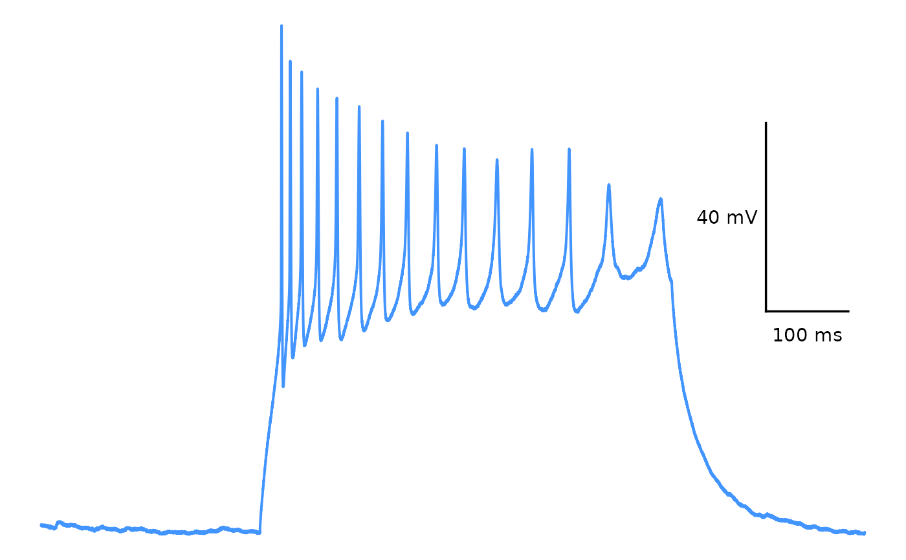
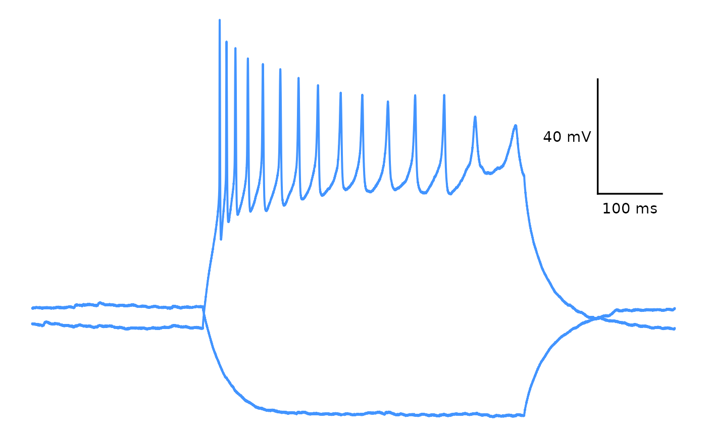
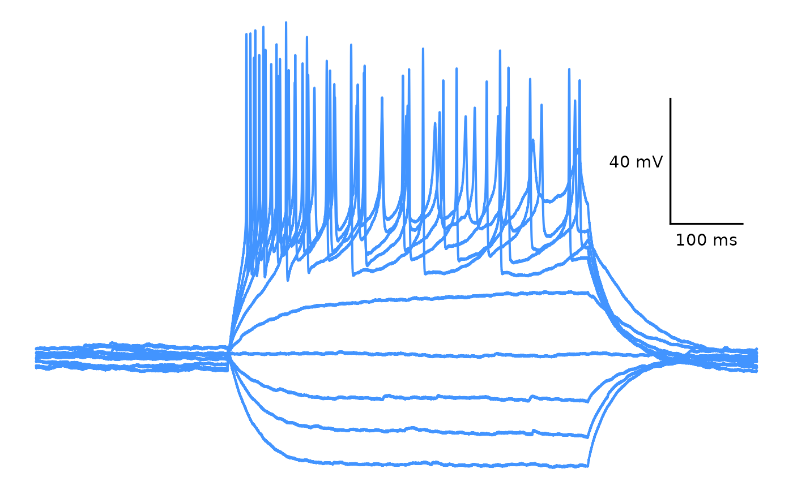

This function allows you to plot an .abf file of a recording taken in current clamp mode. It is useful if you want to display a representative trace of action potentials or the results of a current injection protocol.
Usage
plot_AP_trace(
data,
y_var = "voltage",
sweeps,
colour_scale_option,
custom_scale_colours = NULL,
trace_colour,
line_width = 0.7,
plot_category,
plot_treatment,
state,
include_scale_bar = "yes",
scale_bar_label_y_nudge = 5,
include_scale_bar_label = "yes",
geom_text_family = "",
scale_bar_x_start = 880,
scale_bar_x_length = 100,
scale_bar_x_unit = "ms",
scaling_factor = 10,
scale_bar_y_start = -30,
scale_bar_y_length = 40,
scale_bar_y_unit = "mV",
scale_bar_linewidth = 0.6,
save_plot_png = "no",
filename_suffix,
...
)Arguments
- data
A dataframe generated using
import_ABF_file()withrecording_mode = "current_clamp".- y_var
A character value ("voltage" or "current") describing what variable will be plotted on the y-axis. Defaults to "voltage". Use "current" if you want to demonstrate current injections.
- sweeps
A character value or list of character values of the sweeps you would like to plot. These correspond to the values in the
sweep1column of your dataset, and will likely be in the form of "epi1", "epi2", etc.- colour_scale_option
A character value ("viridis", "custom" or "single_colour") describing what colour scale should be applied to the trace. If set to "viridis" or "custom", the trace will be coloured by sweep.
- custom_scale_colours
A list of character values (can be hex values or named colours) describing the custom theme. Use if
colour_scale_option = "custom".- trace_colour
A hex value of the colour of the lineplot. Use if
colour_scale_option = "single_colour.- line_width
A numeric value specifying the width of the lineplot
- plot_category
A numeric value specifying the category, which can be used to differentiate different protocol types. In the sample dataset for this package,
plot_category == 2represents experiments where insulin was applied continuously after a 5-minute baseline period.- plot_treatment
A character value specifying the treatment you would like to plot (e.g. "Control").
plot_treatmentrepresents antagonists that were present on the brain slice, or the animals were fasted, etc.- state
A character value describing if the recording was taken during the baseline period or post-treatment/protocol. Examples include "Baseline", "Post-insulin". The
statewill be included in the .png filename ifsave_plot_png = "yes".- include_scale_bar
A character value that determines if a scale bar will be added to the plot. Allowed values are "yes" and "no".
- scale_bar_label_y_nudge
An optional numeric value that will add additional padding between the scale bar x-axis label and the scale bar. Defaults to 5.
- include_scale_bar_label
A character value ("yes" or "no") describing whether to include text labels on the scale bar. If "yes", the text annotation values will be pulled from
scale_bar_x_lengthandscale_bar_y_length.- geom_text_family
A character value describing the font family used for the scale bar annotations. Defaults to "", but can be replaced with a named font. Use a package like
extrafontto load system fonts into R.- scale_bar_x_start
A numeric value (in
scale_bar_x_units, so likely milliseconds) describing the x-axis position of the scale bar (default is 880).- scale_bar_x_length
A numeric value describing the horizontal span (in
scale_bar_x_units, so likely milliseconds) of the scale bar (default is 100).- scale_bar_x_unit
A character value (defaults to "ms") which will be present on the scale bar label.
- scaling_factor
A numeric value describing the scaling factor applied by Clampfit to convert recording time to time in milliseconds. The default is 10, and this value will likely not need to be changed.
- scale_bar_y_start
A numeric value describing the y-axis position (in
scale_bar_x_units, so likely mV) of the scale bar (default is -30).- scale_bar_y_length
A numeric value describing the vertical span (in
scale_bar_x_units, so likely mV) of the scale bar (default is 40).- scale_bar_y_unit
A character value (defaults to "mV") which will be present on the scale bar label.
- scale_bar_linewidth
A numeric value describing the thickness of the scalebar line (default is 0.6).
- save_plot_png
A character ("yes" or "no"). If "yes", the plot will be saved as a .png using ggsave. The filepath depends on the current type, but they will all go in subfolders below Figures/ in your project directory.
- filename_suffix
Optional character value to add a suffix to the filename of the .png file created with this plot. Could be useful if you have specified a custom list of treatments.
- ...
Additional arguments passed to
viridis::scale_color_viridissuch asbegin,end,optionanddirection.
Value
A ggplot object. If save_plot_png == "yes", it will also generate
a .png file in the folder Figures/Action-potentials/Representative-traces relative to the
project directory.
Details
WARNING: If you choose to plot current injections (y_var = "current") you MUST change scale_bar_y_unit to the correct unit (likely pA).
Examples
# Viridis
plot_AP_trace(
data = sample_ap_abf_baseline,
sweeps = as.character(unique(sample_ap_abf_baseline$episode)),
colour_scale_option = "viridis",
plot_category = 2,
plot_treatment = "Control",
direction = -1,
option = "plasma",
begin = 0,
end = 0.8
)

# Custom colours
plot_AP_trace(
data = sample_ap_abf_baseline,
sweeps = as.character(unique(sample_ap_abf_baseline$episode)),
custom_scale_colours = c(
"#edd03a", "#cced34",
"#a3fd3d", "#6bfe64",
"#31f199", "#18dcc3",
"#29bbec", "#4294ff",
"#466be3", "#4040a2"
),
colour_scale_option = "custom",
plot_category = 2,
plot_treatment = "Control"
)

# Single colour
plot_AP_trace(
data = sample_ap_abf_baseline,
y_var = "voltage",
sweeps = as.character(unique(sample_ap_abf_baseline$episode)),
colour_scale_option = "single_colour",
trace_colour = "#4294ff",
plot_category = 2,
plot_treatment = "Control"
)
